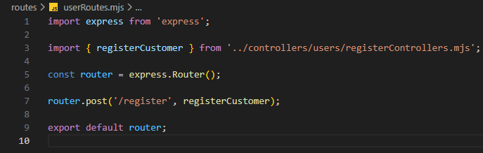
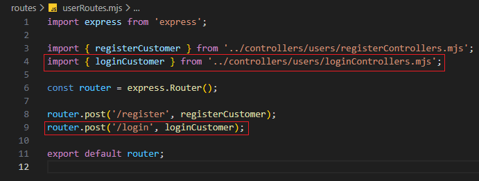

Bejelentkezés kezelése - userRoutes.mjs
Bejelentkezés kezelése - userRoutes.mjs
Ebben a részben szerkesztjük a routes mappában a userRoutes.mjs állományt, amelyben összesítjük a CRUD műveletekhez tartozó logikákat.
-
Szerkesszük a
userRoutes.mjsállományunkat. és-
import { loginCustomer } from '../controllers/users/loginControllers.mjs';- aloginCustomerfüggvény nevesített importja. -
router.post('/login', loginCustomer);- ahttp POST metódus-hoz tartozó logika hívása aloginCustomerfüggvény segítségével.
-
-
Az eddigi munka letölthető formátumban:
backend_07.rar
Letöltés és kicsomagolás után aGitBashfelületen abackendmappában adjuk ki a következő utasítást:
npm install -
A webszerver futtatásához adjuk ki a következő utasítást a
GitBashfelületen:
node --watch ./src/server.mjs